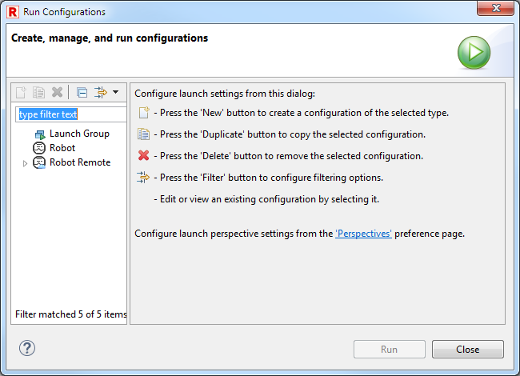
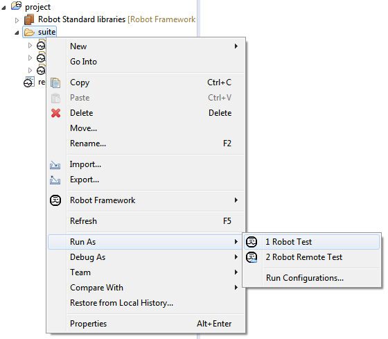
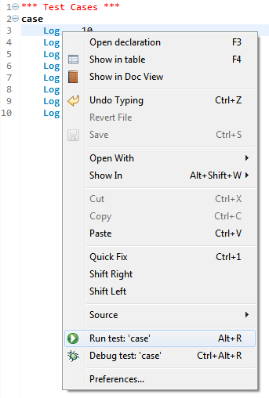
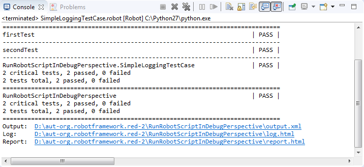
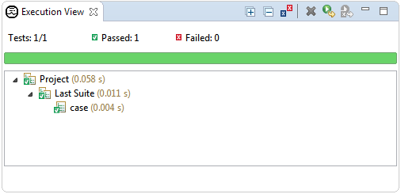

Launching related UI elements
RED provides couple of elements which are used in order to launch test and communicate with
them when they are running.
Launching tests
Launch configuration has to be created to launch Robot tests. This can be done either manually
or automatically e.g. when launching tests from Project Explorer or from Suite Editor.
- Launch Configuration dialog - open launch configurations dialog (via
Run -> Run Configurations... or
Run -> Debug Configurations... menu) and create new configuration under Robot or
Robot Remote element. For detailed description of both configurations and their possible
attributes read Local launches or
Remote launches topic. After creating the configuration it can be launched
manually by clicking Run/Debug button.

- From launching history - launch already existing and previously launched configuration. This
is possible either from top level Run menu or from launching toolbar as depicted on images below:


- Whole suites from Project Explorer - launch tests for given suite(s). It can be either
whole folder containing other suites or simple a suite file. RED will try to find already existing
configuration basing on selected items and launch it or it will create new default one for given
this selection and then launch it.

- Selected tests from Project Explorer - similarly as above configuration for only selected
tests inside some suite can be launched by clicking on tests inside particular suite file.

- Selected tests from Suite Editor - selected tests can also be launched straight from Suite
Editor either in Test Cases page or in Source page. Use context menu or designated keyboard shortcut
to perform launch.


Console view
Console view is standard view provided by eclipse platform. RED is using in to display output of
the tests launch. In case of locally launched tests it displays standard output and standard error
(stdout and stderr) of process which runs the test. It also
contains a header in which command line call and Robot version is shown. Remotely
launched tests do not send those streams to RED, so in this case only messages about remote server
status are displayed.

- Note
- You may notice that some links are clickable in output of tests - for example locations of
Output/Log/Report files as well as location of argument file (if in use). You can use them to
open the files right inside RED.
Execution view
Execution view is a view provided by RED in which RED is presenting suites tree together with
status of tests/suites (PASS or FAIL). The view is updated during tests launch thus presenting
current execution progress. Remotely launched tests may also use this view - the only requirement
is that the tests itself has to take agent into execution as a listener.

There are couple of actions possible within this view:
- Expand All - expands whole tree,
- Collapse All - collapses the tree,
- Show failures only - filters the tree, so that only failed elements are presented,
- Rerun Tests - launches the configuration again,
- Rerun Failed Tests Only - launches the configuration with tests which failed.
- Go To File - from context menu on test (also by double click) - opens editor and selects
test case.
Message Log view
Message Log view is a view provided by RED which presents messages logged during tests execution. Like
execution view it it is also updated during tests launch. Similarly it may also work with Remote
configurations when agent is taken into execution as a listener.

Debug perspective
RED uses standard eclipse Debug perspective when configuration is launched in debug mode.
For more information about working with this perspective please take a look at
Debugging Robot topic.